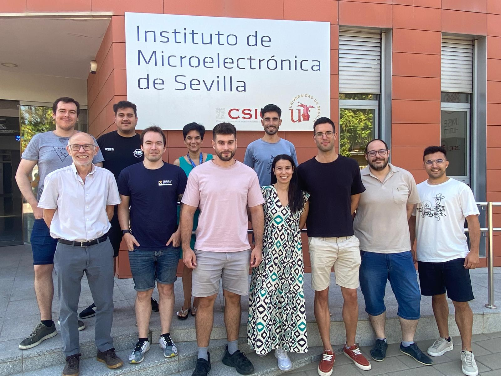

Trusted Systems-on-Chip based on
CMOS and integrated photonics technologies
HWSec-CSIC advances secure SoCs using CMOS and integrated photonics, from tamper‑resistant RISC‑V architectures to trustworthy die‑to‑die communication.
About Us
The security of modern computing infrastructures heavily relies on hardware. Yet, many CAD tools and foundries are non‑European. With technological sovereignty back in focus, we explore new paradigms that deliver advanced, competitive and open solutions — including secure RISC‑V as an alternative to proprietary platforms.

Research Areas
Investigating critical vulnerabilities at the hardware level.
Trusted, tamper‑resistant SoCs on RISC‑V
Design of secure architectures and primitives to harden embedded systems against side‑channel and fault attacks.
Photonic devices for security
Integrated photonics for unclonable identities and quantum‑ready cryptographic mechanisms.
Open die‑to‑die communication
Methodologies and IP leveraging open frameworks to build trustworthy chiplet‑based systems.